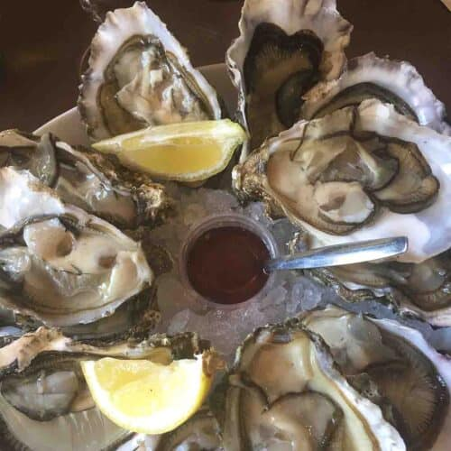

Meat Food
Grilled Steak
A steak, also sometimes called "beef steak" if the meat is from cattle, is thick cut of meat generally sliced across the muscle fibers, sometimes including a bone. It is normally grilled or fried.
Pasta Food
Lasagna
Lasagna is a wide, flat sheet of pasta. Lasagna can refer to either the type of noodle or to the typical lasagna dish which is a dish made with several layers of lasagna sheets with sauce and other ingredients, such as meats and cheese, in between the lasagna noodles.
Italian Spaghetti
Spaghetti (Italian: [spaɡetti]) is a long, thin, solid, cylindrical pasta. It is a staple food of traditional Italian cuisine. Like other pasta, spaghetti is made of milled wheat and water and sometimes enriched with vitamins and minerals. Italian spaghetti is typically made from durum wheat semolina.
Carbonara
Carbonara is an Italian pasta dish from Rome made with eggs, hard cheese, cured pork, and black pepper. The dish arrived at its modern form, with its current name, in the middle of the 20th century. The cheese is usually Pecorino Romano, Parmigiano-Reggiano, or a combination of the two.
Vegetables Food
Chinese Chicken Salad
Regardless of the origins, the salad, consisting of romaine lettuce, shredded chicken, vegetables, fried noodles, and almonds is popular throughout the States. The Chinese part in its name refers to the numerous Chinese-style seasonings such as soy, sesame, and ginger.
Mushroom Risotto
Mushroom risotto is a creamy Italian rice with chicken broth and your favorite mushrooms. You can make it on the stovetop with a little patience and meditative stirring. You can't make risotto with any old rice.
Seafoods
Salmon

Salmon is a common food fish classified as an oily fish with a rich content of protein and omega-3 fatty acids.
Oyster
Oyster is the common name for a number of different families of salt-water bivalve molluscs that live in marine or brackish habitats. In some species, the valves are highly calcified, and many are somewhat irregular in shape. Many, but not all oysters are in the superfamily Ostreoidea.
Lobster
This lobster tail recipe is a decadent dinner made with large lobster tails smothered with a buttery garlic herb sauce then broiled under high heat making these lobster tails tender and juicy. The ultimate indulgence!